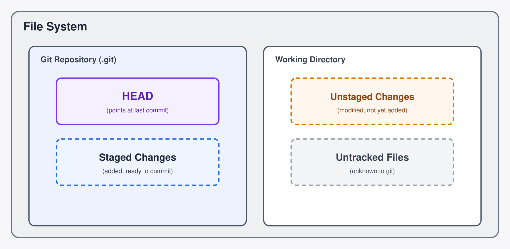
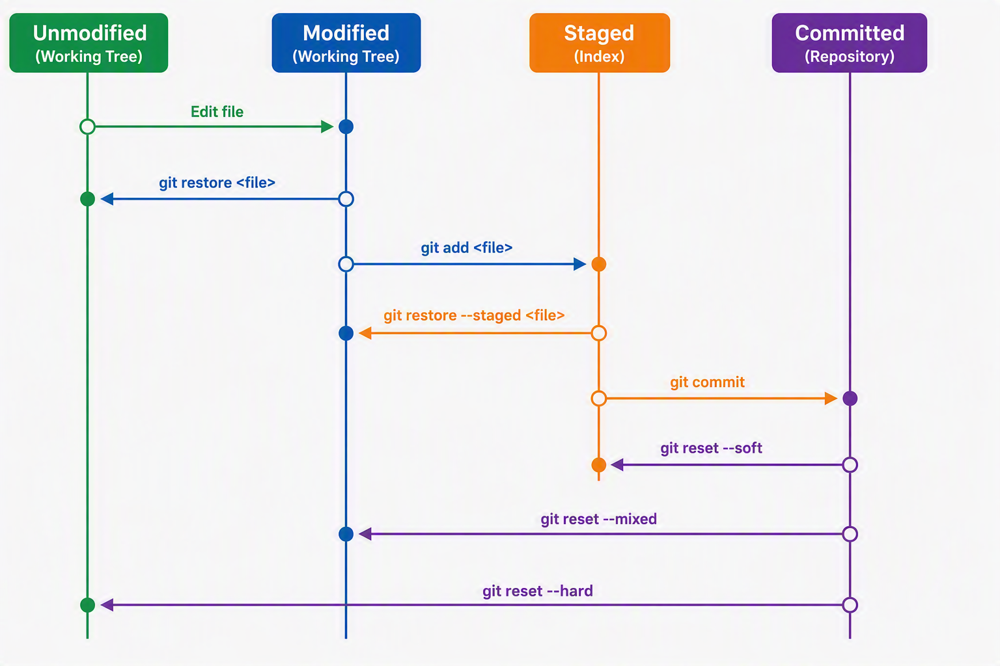
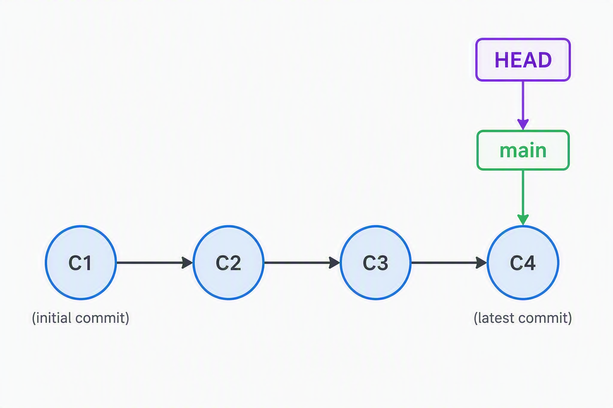
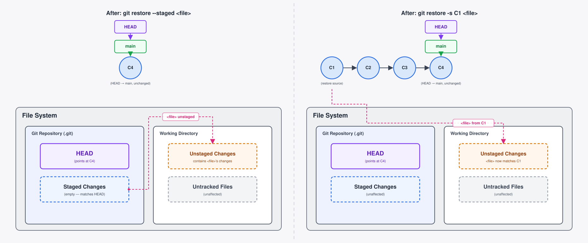
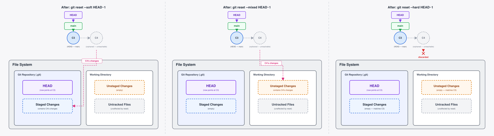
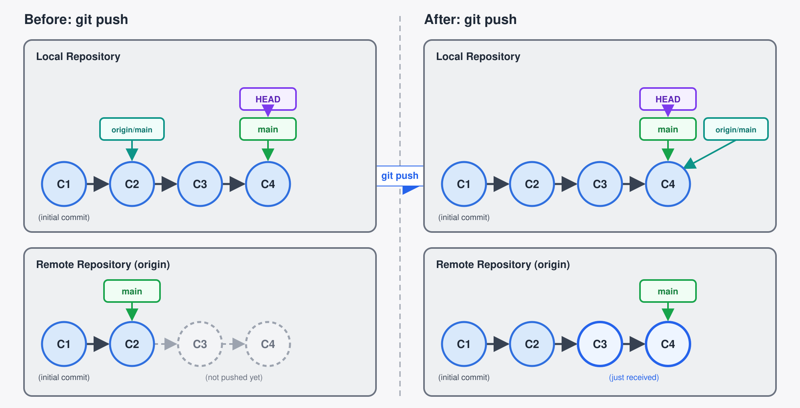
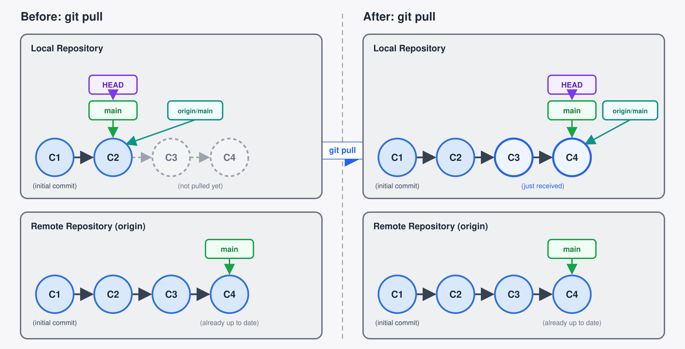
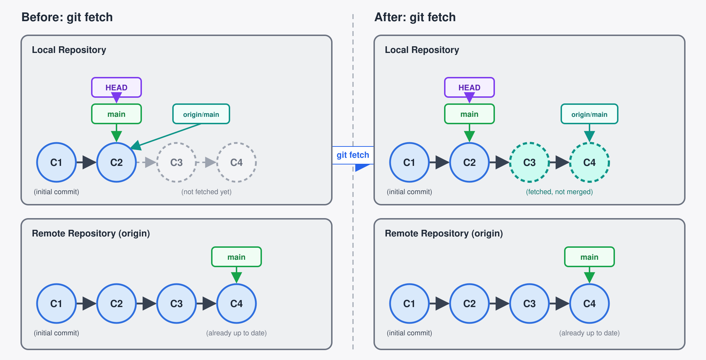

All in One View
Content from Automated Version Control
Last updated on 2026-10-06 | Edit this page
Overview
Questions
- What is version control and why should I use it?
Objectives
- Understand the benefits of an automated version control system.
- Understand the basics of how automated version control systems work.
We’ll start by exploring how version control can be used to keep track of what one person did and when. Even if you aren’t collaborating with other people, automated version control is much better than this situation:

We’ve all been in this situation before: it seems unnecessary to have multiple nearly-identical versions of the same document. Some word processors let us deal with this a little better, such as Microsoft Word’s Track Changes, Google Docs’ version history, or LibreOffice’s Recording and Displaying Changes.
Version control systems start with a base version of the document and then record changes you make each step of the way. You can think of it as a recording of your progress: you can rewind to start at the base document and play back each change you made, eventually arriving at your more recent version.

Once you think of changes as separate from the document itself, you can then think about “playing back” different sets of changes on the base document, ultimately resulting in different versions of that document. For example, two users can make independent sets of changes on the same document.

Unless multiple users make changes to the same section of the document - a conflict - you can incorporate two sets of changes into the same base document.

A version control system is a tool that keeps track of these changes for us, effectively creating different versions of our files. It allows us to decide which changes will be made to the next version (each record of these changes is called a commit), and keeps useful metadata about them, such as who made the change. The complete history of commits for a particular project and their metadata make up a repository. Repositories can be kept in sync across different computers, facilitating collaboration among different people.
The Long History of Version Control Systems
Automated version control systems are nothing new. Tools like RCS, CVS, or Subversion have been around since the early 1980s and are used by many large companies. However, many of these are now considered legacy systems (i.e., outdated) due to various limitations in their capabilities. More modern systems, such as Git and Mercurial, are distributed, meaning that they do not need a centralised server to host the repository. These modern systems also include powerful merging tools that make it possible for multiple authors to work on the same files concurrently.
Git was created by Linus Torvalds in 2005 as an alternative to BitKeeper, one of the first distributed version control systems, to track changes in the Linux kernel. Torvalds provided several explanations of the name, of varying degrees of politeness, which are enumerated in the project’s README, including “Global Information Tracker” for when “you’re in a good mood”.
For those interested, The Carpentries has a Version Control with Mercurial lesson (2013-2018), which provides additional context and historical perspective.
Paper Writing
Imagine you drafted an excellent paragraph for a paper you are writing, but later ruin it. How would you retrieve the excellent version of your conclusion? Is it even possible?
Imagine you have 5 co-authors. How would you manage the changes and comments they make to your paper? If you use LibreOffice Writer or Microsoft Word, what happens if you accept changes made using the
Track Changesoption? Do you have a history of those changes?
Recovering the excellent version is only possible if you created a copy of the old version of the paper. The danger of losing good versions often leads to the problematic workflow illustrated in the PhD Comics cartoon at the top of this page.
Collaborative writing with traditional word processors is cumbersome. Either every collaborator has to work on a document sequentially (slowing down the process of writing), or you have to send out a version to all collaborators and manually merge their comments into your document. The ‘track changes’ or ‘record changes’ option can highlight changes for you and simplifies merging, but as soon as you accept changes you will lose their history. You will then no longer know who suggested that change, why it was suggested, or when it was merged into the rest of the document. Even online word processors like Google Docs or Microsoft Office Online do not fully resolve these problems.
- Version control is like an unlimited ‘undo’.
- Version control also allows many people to work in parallel.
Content from Setting Up Git
Last updated on 2026-10-06 | Edit this page
Overview
Questions
- How do I get set up to use Git?
Objectives
- Configure
gitthe first time it is used on a computer. - Understand the meaning of the
--globalconfiguration flag.
When we use Git on a new computer for the first time, we need to configure a few things. Below are a few examples of configurations we will set as we get started with Git:
- Our name.
- Our email address.
- And that we want to use these settings globally (i.e. for every project).
On a command line, Git commands are written as
git verb options, where verb is what we
actually want to do and options is additional optional
information which may be needed for the verb. So here is
how Alfredo sets up his new laptop:
BASH
$ git config --global user.name "Alfredo Linguini"
$ git config --global user.email "a.linguini@ratatouille.fr"Please use your own name and email address instead of Alfredo’s. This user name and email will be associated with your subsequent Git activity, which means that any changes pushed to GitHub, Bitbucket, GitLab or another Git host server after this lesson will include this information.
For this lesson, we will be interacting with GitHub and so the email address used should be the same as the one used when setting up your GitHub account. If you are concerned about privacy, please review GitHub’s instructions for keeping your email address private.
Keeping your email private
If you elect to use a private email address with GitHub, then use
GitHub’s no-reply email address for the user.email value.
It looks like ID+username@users.noreply.github.com. You can
look up your own address in your GitHub email settings.
Line Endings
As with other keys, when you press Enter or ↵ or on Macs, Return on your keyboard, your computer encodes this input as a character. Different operating systems use different character(s) to represent the end of a line. (You may also hear these referred to as newlines or line breaks.) Because Git uses these characters to compare files, it may cause unexpected issues when editing a file on different machines. Though it is beyond the scope of this lesson, you can read more about this issue in the Pro Git book.
You can change the way Git recognises and encodes line endings using
the core.autocrlf command to git config. The
following settings are recommended:
On macOS and Linux:
And on Windows:
Git (2.28+) allows configuration of the name of the branch created
when you initialise any new repository. Alfredo decides to use that
feature to set it to main so it matches the cloud service
he will eventually use.
Default Git branch naming
Source file changes are associated with a “branch.” Don’t worry too
much about what this means right now - we will get to that later! By
default, Git will create a branch called master when you
create a new repository with git init (as explained in the
next episode). This term evokes the racist practice of human slavery and
the software development
community has moved to adopt more inclusive language.
In 2020, most Git code hosting services transitioned to using
main as the default branch. As an example, any new
repository that is opened in GitHub and GitLab default to
main. However, Git has not yet made the same change. As a
result, local repositories must be manually configured have the same
main branch name as most cloud services.
For versions of Git prior to 2.28, the change can be made on an
individual repository level. The command for this is in the next
episode. Note that if this value is unset in your local Git
configuration, the init.defaultBranch value defaults to
master.
The five commands we just ran above only need to be run once: the
flag --global tells Git to use the settings for every
project, in your user account, on this computer.
Let’s review those settings, its safe to view the configuration with:
And if necessary, change your configuration using the same commands to choose another editor or update your email address. This can be done as many times as you want.
Git Help and Manual
Always remember that if you forget the subcommands or options of a
git command, you can access the relevant list of options
typing git <command> -h or access the corresponding
Git manual by typing git <command> --help, e.g.:
While viewing the manual, remember the : is a prompt
waiting for commands and you can press Q to exit the
manual.
More generally, you can get the list of available git
commands and further resources of the Git manual typing:
- Use
git configwith the--globaloption to configure a user name, email address, editor, and other preferences once per machine.
Content from SSH Setup
Last updated on 2026-10-06 | Edit this page
Overview
Questions
- How do SSH keys work?
Objectives
- Understand how to setup SSH keys.
- Setup SSH keys for GitHub.
1. SSH Background and Setup
Before we can connect to a remote repository, we needs to set up a way for our computer to authenticate with GitHub so it knows it’s us trying to connect to our remote repository.
We are going to set up the method that is commonly used by many different services to authenticate access on the command line. This method is called Secure Shell Protocol (SSH). SSH is a cryptographic network protocol that allows secure communication between computers using an otherwise insecure network.
SSH uses what is called a key pair. This is two keys that work together to validate access. One key is publicly known and called the public key, and the other key called the private key is kept private. Very descriptive names.
You can think of the public key as a padlock, and only you have the key (the private key) to open it. You use the public key where you want a secure method of communication, such as your GitHub account. You give this padlock, or public key, to GitHub and say “lock the communications to my account with this so that only computers that have my private key can unlock communications and send Git commands as my GitHub account.”
What we will do now is the minimum required to set up the SSH keys and add the public key to a GitHub account.
The first thing we are going to do is check if this has already been done on the computer you’re on. Because generally speaking, this setup only needs to happen once and then you can forget about it.
Keeping your keys secure
You shouldn’t really forget about your SSH keys, since they keep your account secure. It’s good practice to check your SSH keys every so often to ensure they are still secure, up to date, and that there are no unauthorised keys that could compromise your account. This is especially important if you are using multiple computers to access your account.
We will run the list command to check what key pairs already exist on your computer.
Your output is going to look a little different depending on whether or not SSH has ever been set up on the computer you are using.
Alfredo has not set up SSH on his computer, so his output is:
OUTPUT
ls: cannot access '/c/Users/Alfredo/.ssh': No such file or directoryIf SSH has been set up on the computer you’re using, the public and
private key pairs will be listed. The file names are either
id_ed25519/id_ed25519.pub or
id_rsa/id_rsa.pub depending on how the key
pairs were set up. Since they don’t exist on Alfredo’s computer, he uses
this command to create them.
If you need to create an SSH key pair with a custom name or store it in a non-default location (e.g., because a default-named key like id_ed25519 already exists), Git may not automatically use it when pushing or pulling from GitHub.
One solution is to add a GitHub entry to your SSH config.
Open or create the SSH config file:
Add an entry for GitHub, replacing the path with your key’s actual name and location:
Host github.com
HostName github.com
User git
IdentityFile ~/<full_path_to_SSH_key_file>/<key_name>
IdentitiesOnly yesSave and exit. Now Git will use the correct key when pushing to GitHub.
1.1 Create an SSH key pair
To create an SSH key pair Alfredo uses this command, where the
-t option specifies which type of algorithm to use and
-C attaches a comment to the key (here, Alfredo’s
email):
In the command above, the -C flag is used to label the
SSH key with the owner’s email address. It’s good practice to use the
same email associated to your GitHub account, but it does not have to
be, and will not be used to validate the access. You can also decide not
to add any label.
If you are using a legacy system that doesn’t support the Ed25519
algorithm, use:
$ ssh-keygen -t rsa -b 4096 -C "your_email@example.com"
OUTPUT
Generating public/private ed25519 key pair.
Enter file in which to save the key (/c/Users/Alfredo/.ssh/id_ed25519):We want to use the default file, so just press Enter.
OUTPUT
Created directory '/c/Users/Alfredo/.ssh'.
Enter passphrase (empty for no passphrase):Now, it is prompting Alfredo for a passphrase. Since he is using his kitchen’s laptop that other people sometimes have access to, he wants to create a passphrase. Be sure to use something memorable or save your passphrase somewhere, as there is no “reset my password” option. Note that, when typing a passphrase on a terminal, there won’t be any visual feedback of your typing. This is normal: your passphrase will be recorded even if you see nothing changing on your screen.
OUTPUT
Enter same passphrase again:After entering the same passphrase a second time, we receive the confirmation:
OUTPUT
Your identification has been saved in /c/Users/Alfredo/.ssh/id_ed25519
Your public key has been saved in /c/Users/Alfredo/.ssh/id_ed25519.pub
The key fingerprint is:
SHA256:SMSPIStNyA00KPxuYu94KpZgRAYjgt9g4BA4kFy3g1o a.linguini@ratatouille.fr
The key's randomart image is:
+--[ED25519 256]--+
|^B== o. |
|%*=.*.+ |
|+=.E =.+ |
| .=.+.o.. |
|.... . S |
|.+ o |
|+ = |
|.o.o |
|oo+. |
+----[SHA256]-----+The “identification” is actually the private key. You should never share it. The public key is appropriately named. The “key fingerprint” is a shorter version of a public key.
Now that we have generated the SSH keys, we will find the SSH files when we check.
OUTPUT
drwxr-xr-x 1 Alfredo 197121 0 Jul 16 14:48 ./
drwxr-xr-x 1 Alfredo 197121 0 Jul 16 14:48 ../
-rw-r--r-- 1 Alfredo 197121 419 Jul 16 14:48 id_ed25519
-rw-r--r-- 1 Alfredo 197121 106 Jul 16 14:48 id_ed25519.pub1.2 Copy the public key to GitHub
Now we have a SSH key pair and we can run this command to check if GitHub can read our authentication.
OUTPUT
The authenticity of host 'github.com (192.30.255.112)' can't be established.
RSA key fingerprint is SHA256:nThbg6kXUpJWGl7E1IGOCspRomTxdCARLviKw6E5SY8.
This key is not known by any other names
Are you sure you want to continue connecting (yes/no/[fingerprint])? y
Please type 'yes', 'no' or the fingerprint: yes
Warning: Permanently added 'github.com' (RSA) to the list of known hosts.
git@github.com: Permission denied (publickey).Right, we forgot that we need to give GitHub our public key!
First, we need to copy the public key. Be sure to include the
.pub at the end, otherwise you’re looking at the private
key.
OUTPUT
ssh-ed25519 AAAAC3NzaC1lZDI1NTE5AAAAIDmRA3d51X0uu9wXek559gfn6UFNF69yZjChyBIU2qKI a.linguini@ratatouille.frNow, going to GitHub.com, click on your profile icon in the top right corner to get the drop-down menu. Click “Settings”, then on the settings page, click “SSH and GPG keys”, on the left side “Access” menu. Click the “New SSH key” button on the right side. Now, you can add the title (Alfredo uses the title “Alfredo’s Kitchen Laptop” so he can remember where the original key pair files are located), paste your SSH key into the field, and click the “Add SSH key” to complete the setup.
Now that we’ve set that up, let’s check our authentication again from the command line.
OUTPUT
Hi Alfredo! You've successfully authenticated, but GitHub does not provide shell access.Good! This output confirms that the SSH key works as intended.
- SSH keys allow you to authenticate yourself.
- SSH keys should be handled carefully to maintain security.
Content from Creating a Repository
Last updated on 2026-10-06 | Edit this page
Overview
Questions
- Where does Git store information?
Objectives
- Create a local Git repository.
- Describe the purpose of the
.gitdirectory.
Once Git is configured, we can start using it.
First, let’s create a new directory in the Desktop
folder for our work and then change the current working directory to the
newly created one:
Then we tell Git to make recipes a repository -- a place where Git can
store versions of our files:
If we use ls to show the directory’s contents, it
appears that nothing has changed:
But if we add the -a flag to show everything, we can see
that Git has created a hidden directory within recipes
called .git:
OUTPUT
. .. .gitGit uses this special subdirectory to store all the information about
the project, including the tracked files and sub-directories located
within the project’s directory. If we ever delete the .git
subdirectory, we will lose the project’s history.
You only have to deal with the files in the project as normal and will never have to touch the .git subdirectory Git will handle what goes in there for you, so don’t touch it!
We can now start using one of the most important Git commands, which
is particularly helpful to beginners. git status tells us
the status of our project, and better, a list of changes in the project
and options on what to do with those changes. We can use it as often as
we want, whenever we want to understand what is going on.
OUTPUT
On branch main
No commits yet
nothing to commit (create/copy files and use "git add" to track)If you are using a different version of git, the exact
wording of the output might be slightly different.
Places to Create Git Repositories
Once a repository is created with git init in a
directory, it can track everything in that directory and any
subdirectory. Other repositories are not required to track
subdirectories and doing this can lead to problems where the outer
repository tracks inner ones.
Separation is key:
- Unrelated projects should be version controlled separately in separate folders.
- Only relevant files should be in the repository directory and version controlled.
Also, note that the creation of the recipes directory
and its initialisation as a repository are completely separate
processes.
-
git initinitialises a repository. - Git stores all of its repository data in the
.gitdirectory. - Only one repository is required for a project and all its sub directories.
Content from Making Changes
Last updated on 2026-10-06 | Edit this page
Overview
Questions
- How do I record changes in Git?
- How do I check the status of my version control repository?
- How do I record notes about what changes I made and why?
Objectives
- Go through the modify-add-commit cycle for one or more files.
- Explain where information is stored at each stage of that cycle.
- Distinguish between descriptive and non-descriptive commit messages.
Introduction
Once we have our repository set up, we can start making use of git’s
tracking features. To start with, we can use the git status
command. Files in the repository directory are either tracked or
untracked.
Tracked and untracked files

Untracked files are files in the directory which have not yet been
added to the Git repository and Git will not be able to track changes in
these files. However, Git is aware of them: they will show up as
untracked in a git status output.
Tracked files are files which have been added to the repository. Git will check to see if these files have been modified relative to the last commit (restore point). Files only have to be committed once to be tracked from that point onwards.
Modified files
Modified files are themselves either “unstaged”, meaning they have not been marked to be included in the next restore point (“commit”), or “staged”, meaning they will be included in the next commit.
When we use git status, we can see which files are in
each state.

.gitignore
Some files we explicitly choose not to track. They could be files
generated from tests or sensitive things we don’t want to share. To keep
them untracked, we list them in a .gitignore file, which
tells Git to ignore them. We usually create this file at the start of a
repository and update it as we go along. When files which are listed in
the .gitignore are modified, the changes won’t be shown in
git status and cannot be staged or committed unless forced
with additional commands.
Making changes and tracking them in Git follows a 3-step cycle:
1 Modify
- Make a change like making a new file or editing a paragraph.
- This may include multiple files.
2 Add
- Tell Git to bundle this modification as part of the next “save”.
- Multiple modifications or files can be added to this.
- We call this bundle the “staging area”. Files are “staged” using the
git add <file>command. - Only staged modifications can be part of a commit.
- If a file has been modified after it has been staged, the new modification has to be staged again to be included.
3 Commit
- Tell Git to save the set of modifications we previously added, and create a new restore point (“commit”).
- A message is added to describe the logical change from the previous point.
- The message is written as an imperative by convention eg.
git commit -m "add config file".
Atomic Commits
The idea of this cycle is that we should only create commits (restore points) for a minimal set of modifications that constitute a single self-consistent logical change. Each commit is saved as difference between the current commit and the previous one. Once we commit, the staged changes are now just part of the current version, so the staging area is empty. A copy of the committed version is saved in the .git directory.
Git History
We can then build up our project using this cycle with a new commit
each time we make a logical change. Each commit is labelled with the
commit message and a hash code that uniquely identifies it. This builds
what we call the “history”: the chain of commits which describe each
step we took to get to the current version. We can view this history
using the git log command.

Follow the recipe
Make a new subdirectory in your recipes repository, and name it after
a recipe you know. Within this directory, create an
Ingredients.md file and a Method.md file.
Fill the files with the simplest details of your recipe and commit them to the repository.
Change one of ingredients and keep the name consistent in both files. How should we add them to the repository to ensure each version is self consistent?
Make 4 or 5 more logical changes to your recipe and commit them when
you feel appropriate. Check your work using the git status
and git log commands as you go along.
Don’t worry about mistakes for now, just fix them in the next commit :::::::::::::::::::::::::::: solution
For consistency we can add both files together:
git add Ingredients.md Method.md. We can commit them like
so: git commit -m "change ingredient x to ingredient y"
:::::::::::::::::::::::::::::
Undoing things
Making changes and creating commits can seem daunting at first. It’s easy to mix up what files to add to a commit, and mistakes happen all the time. We don’t want these mistakes to also be saved indefinitely. The good news is that we can undo any of the steps in the cycle.

Within the modify, add, commit cycle, we can undo any state changes and invert any command:
We can undo modifications to a file and restore the version in the
previous commit using git restore <file>
We can unstage a file from the staging area while keeping the
modification in the file system by doing
git restore --staged <file>

Finally, if we are working locally, we can undo the commit. This is called rewriting the history, and it is important that we only do this if the commit is local and hasn’t been pushed to a remote, otherwise we risk permanently changing the history for everyone and affecting their work.
To undo the commit, we can use git reset with additional
flags:
--softundoes the act of the commit and keeps the staged modifications.--mixedkeeps the modifications but leaves them unstaged.--hardundoes all the modifications and returns the state to the previous commit.
Challenge 1: Git Tango
Part 1: Two steps forward one step back
Try creating a new file called git_tango.md
Type in instructions like:
OUTPUT
# Git Tango
two steps forwardThen use the Git commands to track and stage the file.
Confirm the change of state with git status
Now unstage the file and confirm it again.
From this point, confirm each step using git status and
git log
Part 2: Three steps forward
Modify the file and add another instruction.
Use the commands to stage the new changes.
Commit staged changes.
Confirm the changes with
git statusandgit log.
Part 3: One step back
Modify the file and add an incorrect instruction.
Use the commands to stage and commit the error.
Confirm the error with
git statusandgit log.Undo the commit leaving modifications in the staging area.
Part 4: One step forward two steps back
Rename the commit and then unstage it.
Commit again with a different message.
Undo the commit keeping modifications but unstaged.
Part 5: Three more steps forward
Correct the instruction in the file, then add and commit it.
Part 6: Three steps back
Completely undo the commit so it’s unchanged from Part 2.
Use the commands git add <file> to stage a file.
Use git status to check it has been staged. Use
git restore --staged <file> to unstage the file. Use
git status to check it has been unstaged.
Modify the file then use git add <file> and
git commit -m "commit message" to add a commit. Use
git status and git log to check the commit has
been added.
Initially same as Part 2. Then to inverse use
git reset --soft.
Use git commit -m "new commit message". Then to inverse
and unstage git reset --mixed.
Same as Part 2.
Use git reset --hard.
Note that when using git reset to undo a
git commit, the same rule is applied to all the staged
changes the commit contains, similar to how a git commit
puts all the staged changes into a commit. This is different to how
git add <files> and
git restore --staged <files> apply to individual
files.
Now that you are familiar with making commits, try to add a few steps to this recipe in separate commits. Remember to make single logical changes each time and use a descriptive commit message.
Finally use git log to see your history and commit
messages. Compare your log with someone else’s and see if you can follow
the changes they made. Hopefully this will highlight the importance of
single logical changes and accurate, concise commit messages!
- Check the current state using
git statusandgit log. - Make self-consistent logical changes with the modify add commit cycle.
- Use concise, accurate commit messages to help you follow your process.
- Undo any part of this cycle using
git restore --stagedorgit reset with --soft, --mixed, or --hard.
Content from Backing it up
Last updated on 2026-10-06 | Edit this page
Overview
Questions
- How do I back up my work safely on the web?
Objectives
- Explain what remote repositories are and why they are useful.
- Push to or pull from a remote repository.
Version control really comes into its own when we begin to collaborate with other people. We already have most of the machinery we need to do this; the only thing missing is to copy changes from one repository to another.
Systems like Git allow us to move work between any two repositories. In practice, though, it’s easiest to use one copy as a central hub, and to keep it on the web rather than on someone’s laptop. Most programmers use hosting services like GitHub, Bitbucket or GitLab to hold those main copies.
Let’s start by sharing the changes we’ve made to our current project with the world. To this end we are going to create a remote repository that will be linked to our local repository.
1. Create a remote repository
Log in to GitHub, then click on the
icon in the top right corner to create a new repository called
recipes:

Name your repository “recipes” and then click “Create Repository”.
Note: Since this repository will be connected to a local repository, it needs to be empty. Leave “Initialize this repository with a README” unchecked, and keep “None” as options for both “Add .gitignore” and “Add a license.” See the “GitHub License and README files” exercise below for a full explanation of why the repository needs to be empty.

As soon as the repository is created, GitHub displays a page with a URL and some information on how to configure your local repository:

This effectively does the following on GitHub’s servers:
Note that our local repository still contains the work we did before on recipes, but the remote repository on GitHub appears empty as it doesn’t contain any files yet.
2. Connect local to remote repository
Now we connect the two repositories. We do this by making the GitHub repository a remote for the local repository. The home page of the repository on GitHub includes the URL string we need to identify it:

Click on the ‘SSH’ link to change the protocol from HTTPS to SSH.
HTTPS vs. SSH
We use SSH here because, while it requires some additional configuration, it is a security protocol widely used by many applications. The steps below describe SSH at a minimum level for GitHub.

Copy that URL from the browser, go into the local
recipes repository, and run this command:
Make sure to use the URL for your repository rather than Alfredo’s:
the only difference should be your username instead of
alflin.
origin is a local name used to refer to the remote
repository. It could be called anything, but origin is a
convention that is often used by default in Git and GitHub, so it’s
helpful to stick with this unless there’s a reason not to.
We can check that the command has worked by running
git remote -v:
OUTPUT
origin git@github.com:alflin/recipes.git (fetch)
origin git@github.com:alflin/recipes.git (push)We’ll discuss remotes in more detail in the next episode, while talking about how they might be used for collaboration.
3. Push local changes to a remote
Now that authentication is setup, we can return to the remote. This command will push the changes from our local repository to the repository on GitHub:
Since Alfredo set up a passphrase, it will prompt him for it. If you completed advanced settings for your authentication, it will not prompt for a passphrase.
OUTPUT
Enumerating objects: 16, done.
Counting objects: 100% (16/16), done.
Delta compression using up to 8 threads.
Compressing objects: 100% (11/11), done.
Writing objects: 100% (16/16), 1.45 KiB | 372.00 KiB/s, done.
Total 16 (delta 2), reused 0 (delta 0)
remote: Resolving deltas: 100% (2/2), done.
To https://github.com/alflin/recipes.git
* [new branch] main -> mainOur local and remote repositories are now in sync.

The ‘-u’ Flag
You may see a -u option used with git push
in some documentation. This option is synonymous with the
--set-upstream-to option for the git branch
command, and is used to associate the current branch with a remote
branch so that the git pull command can be used without any
arguments. To do this, simply use git push -u origin main
once the remote has been set up.
We can pull changes from the remote repository to the local one as well:
OUTPUT
From https://github.com/alflin/recipes
* branch main -> FETCH_HEAD
Already up-to-date.Pulling has no effect in this case because the two repositories are already synchronised. If someone else had pushed some changes to the repository on GitHub, though, this command would download them to our local repository.

If you don’t want to necessarily add the commits, but you want to
refresh your view of the remote branch, you can use
git fetch instead. A git pull is actually just
a git fetch followed by a git merge, which we
will discuss later.

GitHub GUI
Browse to your recipes repository on GitHub. Under the
Code tab, find and click on the text that says “XX commits” (where “XX”
is some number). Hover over, and click on, the three buttons to the
right of each commit. What information can you gather/explore from these
buttons? How would you get that same information in the shell?
When you click on the left-most button, you’ll see all of the changes
that were made in that particular commit. Green shaded lines indicate
additions and red ones removals. In the shell we can do the same thing
with git diff. In particular,
git diff ID1..ID2 where ID1 and ID2 are commit identifiers
(e.g. git diff a3bf1e5..041e637) will show the differences
between those two commits.
The middle button (with the picture of two overlapping squares or
pages) copies the full identifier of the commit to the clipboard. In the
shell, git log will show you the full commit identifier for
each commit.
The right-most button lets you view all of the files in the
repository at the time of that commit. To do this in the shell, we’d
need to checkout the repository at that particular time. We can do this
with git checkout ID where ID is the identifier of the
commit we want to look at. If we do this, we need to remember to put the
repository back to the right state afterwards!
Uploading files directly in GitHub browser
GitHub also allows you to skip the command line and upload files directly to your repository without having to leave the browser. There are two options. First you can click the “Upload files” button in the toolbar at the top of the file tree. Or, you can drag and drop files from your desktop onto the file tree. You can read more about this on this GitHub page.
GitHub Timestamp
Create a remote repository on GitHub. Push the contents of your local repository to the remote. Make changes to your local repository and push these changes. Go to the repo you just created on GitHub and check the timestamps of the files. How does GitHub record times, and why?
GitHub displays timestamps in a human readable relative format (i.e. “22 hours ago” or “three weeks ago”). However, if you hover over the timestamp, you can see the exact time at which the last change to the file occurred.
Push vs. Commit
In this episode, we introduced the “git push” command. How is “git push” different from “git commit”?
When we push changes, we’re interacting with a remote repository to update it with the changes we’ve made locally (often this corresponds to sharing the changes we’ve made with others). Commit only updates your local repository.
GitHub License and README files
In this episode we learned about creating a remote repository on GitHub, but when you initialised your GitHub repo, you didn’t add a README.md or a license file. If you had, what do you think would have happened when you tried to link your local and remote repositories?
In this case, we’d see a merge conflict due to unrelated histories. When GitHub creates a README.md file, it performs a commit in the remote repository. When you try to pull the remote repository to your local repository, Git detects that they have histories that do not share a common origin and refuses to merge.
OUTPUT
warning: no common commits
remote: Enumerating objects: 3, done.
remote: Counting objects: 100% (3/3), done.
remote: Total 3 (delta 0), reused 0 (delta 0), pack-reused 0
Unpacking objects: 100% (3/3), done.
From https://github.com/alflin/recipes
* branch main -> FETCH_HEAD
* [new branch] main -> origin/main
fatal: refusing to merge unrelated historiesYou can force Git to merge the two repositories with the option
--allow-unrelated-histories. Be careful when you use this
option and carefully examine the contents of local and remote
repositories before merging.
OUTPUT
From https://github.com/alflin/recipes
* branch main -> FETCH_HEAD
Merge made by the 'recursive' strategy.
README.md | 1 +
1 file changed, 1 insertion(+)
create mode 100644 README.md- A local Git repository can be connected to one or more remote repositories.
- Use the SSH protocol to connect to remote repositories.
-
git pushcopies changes from a local repository to a remote repository. -
git pullcopies changes from a remote repository to a local repository.
Content from Exploring History
Last updated on 2026-10-06 | Edit this page
Overview
Questions
- How can I identify old versions of files?
- How do I review my changes?
- How can I recover old versions of files?
Objectives
- Explain what the HEAD of a repository is and how to use it.
- Identify and use Git commit numbers.
- Compare various versions of tracked files.
- Restore old versions of files.
As we saw in the previous episode, we can refer to commits by their
identifiers. Git also provides a special identifier called
HEAD, which refers to the most recent
commit.
We can use HEAD together with commands we already know
to examine our project’s history.
Before we start, let’s make a change to our recipes. For example,
guacamole.md so we have something to compare. We won’t save
this change yet.
OUTPUT
# Guacamole
## Ingredients
* avocado
* lime
* salt
## Instructions
An ill-considered changeNow, let’s see what we get.
OUTPUT
diff --git a/guacamole.md b/guacamole.md
index b36abfd..0848c8d 100644
--- a/guacamole.md
+++ b/guacamole.md
@@ -4,3 +4,4 @@
* lime
* salt
## Instructions
+An ill-considered changeHere we have the difference between the file in our working directory and the most recently committed version.
We can also refer to earlier commits relative to HEAD.
For example, by adding ~1 (where “~” is “tilde”, pronounced
[til-duh]), we can look at the commit before
HEAD.
If we want to see the differences between older commits we can use
git diff again, but with the notation HEAD~1,
HEAD~2, and so on, to refer to them:
OUTPUT
diff --git a/guacamole.md b/guacamole.md
index df0654a..b36abfd 100644
--- a/guacamole.md
+++ b/guacamole.md
@@ -1,3 +1,6 @@
# Guacamole
## Ingredients
+* avocado
+* lime
+* salt
## InstructionsWe could also use git show, which shows us what changes
we made at an older commit as well as the commit message, rather than
the differences between a commit and our working directory that
we see by using git diff.
OUTPUT
commit f22b25e3233b4645dabd0d81e651fe074bd8e73b
Author: Alfredo Linguini <a.linguini@ratatouille.fr>
Date: Thu Aug 22 10:07:21 2013 -0400
Create a template for recipe
diff --git a/guacamole.md b/guacamole.md
new file mode 100644
index 0000000..df0654a
--- /dev/null
+++ b/guacamole.md
@@ -0,0 +1,3 @@
+# Guacamole
+## Ingredients
+## InstructionsIn this way, we can build up a chain of commits. The most recent end
of the chain is referred to as HEAD; we can refer to
previous commits using the ~ notation, so
HEAD~1 means “the previous commit”, while
HEAD~123 goes back 123 commits from where we are now.
We can also refer to commits using those long strings of digits and
letters that both git log and git show
display. These are unique IDs for the changes, and “unique” really does
mean unique: every change to any set of files on any computer has a
unique 40-character identifier. Our first commit was given the ID
f22b25e3233b4645dabd0d81e651fe074bd8e73b, so let’s try
this:
OUTPUT
diff --git a/guacamole.md b/guacamole.md
index df0654a..93a3e13 100644
--- a/guacamole.md
+++ b/guacamole.md
@@ -1,3 +1,7 @@
# Guacamole
## Ingredients
+* avocado
+* lime
+* salt
## Instructions
+An ill-considered changeThat’s the right answer, but typing out random 40-character strings is annoying, so Git lets us use just the first few characters (typically seven for normal-size projects):
OUTPUT
diff --git a/guacamole.md b/guacamole.md
index df0654a..93a3e13 100644
--- a/guacamole.md
+++ b/guacamole.md
@@ -1,3 +1,7 @@
# Guacamole
## Ingredients
+* avocado
+* lime
+* salt
## Instructions
+An ill-considered changeAll right! So we can save changes to files and see what we’ve
changed. Now, how can we restore older versions of things? Let’s suppose
we change our mind about the last update to guacamole.md
(the “ill-considered change”).
git status now tells us that the file has been changed,
but those changes haven’t been staged:
OUTPUT
On branch main
Changes not staged for commit:
(use "git add <file>..." to update what will be committed)
(use "git restore <file>..." to discard changes in working directory)
modified: guacamole.md
no changes added to commit (use "git add" and/or "git commit -a")We can put things back the way they were by using
git restore:
OUTPUT
# Guacamole
## Ingredients
* avocado
* lime
* salt
## InstructionsAs you might guess from its name, git restore restores
an old version of a file. By default, it recovers the version of the
file recorded in HEAD, which is the last saved commit. If
we want to go back even further, we can use a commit identifier instead,
using the -s option:
OUTPUT
# Guacamole
## Ingredients
## InstructionsOUTPUT
On branch main
Changes not staged for commit:
(use "git add <file>..." to update what will be committed)
(use "git restore <file>..." to discard changes in working directory)
modified: guacamole.md
no changes added to commit (use "git add" and/or "git commit -a")
Notice that the changes are not currently in the staging area, and
have not been committed. If we wished, we could put things back the way
they were at the last commit by using git restore to
overwrite the working copy with the last committed version:
OUTPUT
# Guacamole
## Ingredients
* avocado
* lime
* salt
## InstructionsIt’s important to remember that we must use the commit number that
identifies the state of the repository before the change we’re
trying to undo. A common mistake is to use the number of the commit in
which we made the change we’re trying to discard. In the example below,
we want to retrieve the state from before the most recent commit
(HEAD~1), which is commit f22b25e. We use the
. to mean all files:

So, to put it all together, here’s how Git works in cartoon form:

The fact that files can be reverted one by one tends to change the way people organise their work. For example, in a thesis, if everything is in one large document, it’s hard (but not impossible) to undo changes to the introduction without also undoing changes made later to the conclusion. If the introduction and conclusion are stored in separate files, on the other hand, moving backward and forward in time becomes much easier.
Recovering Older Versions of a File
If someone let us cook and we went way overboard with our new
versions of Method.md. How would we recover older versions
of our recipe?
$ git restore$ git restore Method.md$ git restore -s HEAD~1 Method.md$ git restore -s <unique ID of last commit> Method.mdBoth 2 and 4
The answer is (5)-Both 2 and 4.
The restore command restores files from the repository,
overwriting the files in your working directory. Answers 2 and 4 both
restore the latest version in the repository of the
file Method.md. Answer 2 uses HEAD to indicate
the latest, whereas answer 4 uses the unique ID of the last
commit, which is what HEAD means.
Answer 3 gets the version of Method.md from the commit
before HEAD, which is NOT what we wanted.
Answer 1 results in an error. You need to specify a file to restore.
If you want to restore all files you should use
git restore .
Understanding Workflow and History
What is the output of the last command in:
BASH
$ cd recipes
$ echo "I like tomatoes, therefore I like ketchup" > ketchup.md
$ git add ketchup.md
$ echo "ketchup enhances pasta dishes" >> ketchup.md
$ git commit -m "My opinions about the red sauce"
$ git restore ketchup.md
$ cat ketchup.md # this will print the content of ketchup.md on screenOUTPUT
ketchup enhances pasta dishesOUTPUT
I like tomatoes, therefore I like ketchupOUTPUT
I like tomatoes, therefore I like ketchup ketchup enhances pasta dishesOUTPUT
Error because you have changed ketchup.md without committing the changes
The answer is 2.
The changes to the file from the second echo command are
only applied to the working copy, not the version in the staging area.
The command git add ketchup.md places the current version
of ketchup.md into the staging area.
So, when git commit -m "My opinions about the red sauce"
is executed, the version of ketchup.md committed to the
repository is the one from the staging area and has only one line.
At this time, the working copy still has the second line (and
git status will show that the file is modified). However,
git restore ketchup.md replaces the working copy with the
most recently committed version of ketchup.md. So,
cat ketchup.md will output:
OUTPUT
I like tomatoes, therefore I like ketchupChecking Understanding of
git diff
Consider this command: git diff HEAD~9. What do you
predict this command will do if you execute it? What happens when you do
execute it? Why?
Try another command, git diff [ID], where [ID] is
replaced with the unique identifier for your most recent commit. What do
you think will happen, and what does happen?
Getting Rid of Staged Changes
git restore can be used to restore a previous commit
when unstaged changes have been made, but will it also work for changes
that have been staged but not committed? Make a change to
guacamole.md, add that change using git add,
then use git restore to see if you can remove your
change.
After adding a change, git restore cannot be used
directly. Let’s look at the output of git status:
OUTPUT
On branch main
Changes to be committed:
(use "git restore --staged <file>..." to unstage)
modified: guacamole.md
Note that if you don’t have the same output you may either have forgotten to change the file, or you have added it and committed it.
Using the command git restore guacamole.md now does not
give an error, but it does not restore the file either. Git helpfully
tells us that we need to use git restore --staged first to
unstage the file:
Now, git status gives us:
OUTPUT
On branch main
Changes not staged for commit:
(use "git add <file>..." to update what will be committed)
(use "git restore <file>..." to discard changes in working directory)
modified: guacamole.md
no changes added to commit (use "git add" and/or "git commit -a")This means we can now use git restore to restore the
file to the previous commit:
OUTPUT
On branch main
nothing to commit, working tree cleanExplore and Summarise Histories
Exploring history is an important part of Git, and often it is a challenge to find the right commit ID, especially if the commit is from several months ago.
Imagine the recipes project has more than 50 files. You
would like to find a commit that modifies some specific text in
guacamole.md. When you type git log, a very
long list appeared. How can you narrow down the search?
Recall that the git diff command allows us to explore
one specific file, e.g., git diff guacamole.md. We can
apply a similar idea here.
Unfortunately some of these commit messages are very ambiguous, e.g.,
update files. How can you search through these files?
git diff and git log each summarise a
different part of the history for you. Is it possible to combine both?
Let’s try the following:
You should get a long list of output, and you should be able to see both commit messages and the difference between each commit.
Question: What does the following command do?
- The HEAD labels the currently checked out commit and we can refer to
previous commits using
~N. -
git diffandgit showdisplay differences between commits. -
git restorerecovers previous versions of files.
Content from Ignoring Things
Last updated on 2026-10-06 | Edit this page
Overview
Questions
- How can I tell Git to ignore files I don’t want to track?
Objectives
- Configure Git to ignore specific files.
- Explain why ignoring files can be useful.
What if we have files that we do not want Git to track for us, like backup files created by our editor or intermediate files created during data analysis? Let’s create a few dummy files:
and see what Git says:
OUTPUT
On branch main
Untracked files:
(use "git add <file>..." to include in what will be committed)
a.png
b.png
c.png
pictures/
nothing added to commit but untracked files present (use "git add" to track)Putting these files under version control would be a waste of disk space. What’s worse, having them all listed could distract us from changes that actually matter, so let’s tell Git to ignore them.
We do this by creating a file in the root directory of our project
called .gitignore:
Type the text below into the .gitignore file:
*.png
pictures/Save the file and exit your editor.
Verify that the file contains the files to ignore.
OUTPUT
*.png
pictures/These patterns tell Git to ignore any file whose name ends in
.png and everything in the pictures directory.
(If any of these files were already being tracked, Git would continue to
track them.)
Once we have created this file, the output of git status
is much cleaner:
OUTPUT
On branch main
Untracked files:
(use "git add <file>..." to include in what will be committed)
.gitignore
nothing added to commit but untracked files present (use "git add" to track)The only thing Git notices now is the newly-created
.gitignore file. You might think we wouldn’t want to track
it, but everyone we’re sharing our repository with will probably want to
ignore the same things that we’re ignoring. Let’s add and commit
.gitignore:
OUTPUT
On branch main
nothing to commit, working tree cleanAs a bonus, using .gitignore helps us avoid accidentally
adding files to the repository that we don’t want to track:
OUTPUT
The following paths are ignored by one of your .gitignore files:
a.png
Use -f if you really want to add them.If we really want to override our ignore settings, we can use
git add -f to force Git to add something. For example,
git add -f a.png. We can also always see the status of
ignored files if we want:
OUTPUT
On branch main
Ignored files:
(use "git add -f <file>..." to include in what will be committed)
a.png
b.png
c.png
pictures/
nothing to commit, working tree cleanIf you only want to ignore the contents of
pictures/cake, you can change your .gitignore
to ignore only the /cake/ subfolder by adding the following
line to your .gitignore:
OUTPUT
pictures/cake/This line will ensure only the contents of pictures/cake
is ignored, and not the contents of pictures/pizza.
As with most programming issues, there are a few alternative ways that one may ensure this ignore rule is followed. The “Ignoring Nested Files: Variation” exercise has a slightly different directory structure that presents an alternative solution. Further, the discussion page has more detail on ignore rules.
Including Specific Files
How would you ignore all .png files in your root
directory except for final.png? Hint: Find out what
! (the exclamation point operator) does.
You would add the following two lines to your .gitignore:
OUTPUT
*.png # ignore all png files
!final.png # except final.pngThe exclamation point operator will include a previously excluded entry.
Note also that, if you’ve previously committed .png
files in this lesson, they will not be ignored with this new rule. Only
future additions of .png files to the root directory will
be ignored.
Ignoring Nested Files: Variation
Given a directory structure that looks similar to the earlier Nested Files exercise, but with a slightly different directory structure:
How would you ignore all of the contents in the pictures folder, but
not pictures/pie?
Hint: Think a bit about how you created an exception with the
! operator before.
If you want to ignore the contents of pictures/ but not
those of pictures/pie/, you can change your
.gitignore to ignore the contents of pictures folder, but
create an exception for the contents of the pictures/pie
subfolder. Your .gitignore would look like this:
OUTPUT
pictures/* # ignore everything in pictures folder
!pictures/pie/ # do not ignore pictures/pie/ contentsIgnoring All Data Files in a Directory
Assuming you have an empty .gitignore file, and given a directory structure that looks like:
BASH
pictures/data/location/gps/a.dat
pictures/data/location/gps/b.dat
pictures/data/location/gps/c.dat
pictures/data/location/gps/info.txt
pictures/plotsWhat’s the shortest .gitignore rule you could write to
ignore all .dat files in
pictures/data/location/gps? Do not ignore the
info.txt.
Appending pictures/data/location/gps/*.dat will match
every file in pictures/data/location/gps that ends with
.dat. The file
pictures/data/location/gps/info.txt will not be
ignored.
Ignoring All Data Files in the Repository
Let us assume you have many .csv files in different
subdirectories of your repository. For example, you might have:
BASH
results/a.csv
data/experiment_1/b.csv
data/experiment_2/c.csv
data/experiment_2/variation_1/d.csvHow do you ignore all the .csv files, without explicitly
listing the names of the corresponding folders?
In the .gitignore file, write:
OUTPUT
**/*.csvThis will ignore all the .csv files, regardless of their
position in the directory tree. You can still include some specific
exception with the exclamation point operator.
The ! modifier will negate an entry from a previously
defined ignore pattern. Because the !*.csv entry negates
all of the previous .csv files in the
.gitignore, none of them will be ignored, and all
.csv files will be tracked.
Log Files
You wrote a script that creates many intermediate log-files of the
form log_01, log_02, log_03, etc.
You want to keep them but you do not want to track them through
git.
Write one
.gitignoreentry that excludes files of the formlog_01,log_02, etc.Test your “ignore pattern” by creating some dummy files of the form
log_01, etc.You find that the file
log_01is very important after all, add it to the tracked files without changing the.gitignoreagain.Discuss with your neighbour what other types of files could reside in your directory that you do not want to track and thus would exclude via
.gitignore.
- Append either
log_*orlog*as a new entry in your .gitignore. - Track
log_01usinggit add -f log_01.
- The .gitignore file is a text file that tells Git which files to track and which to ignore in the repository.
- You can list specific files or folders to be ignored by Git, or you can include files that would normally be ignored.
Content from Collaborating
Last updated on 2026-10-06 | Edit this page
Overview
Questions
- How can I use version control to collaborate with other people?
Objectives
- Clone a remote repository.
- Collaborate by pushing to a common repository.
- Describe the basic collaborative workflow.
For the next step, get into pairs. One person will be the “Owner” and the other will be the “Collaborator”. The goal is that the Collaborator add changes into the Owner’s repository. We will switch roles at the end, so both persons will play Owner and Collaborator.
Practising By Yourself
If you’re working through this lesson on your own, you can carry on by opening a second terminal window. This window will represent your partner, working on another computer. You won’t need to give anyone access on GitHub, because both ‘partners’ are you.
The Owner needs to give the Collaborator access. In your repository page on GitHub, click the “Settings” button on the right, select “Collaborators”, click “Add people”, and then enter your partner’s username.

To accept access to the Owner’s repo, the Collaborator needs to go to https://github.com/notifications or check for email notification. Once there she can accept access to the Owner’s repo.
Next, the Collaborator needs to download a copy of the Owner’s repository to her machine. This is called “cloning a repo”.
The Collaborator doesn’t want to overwrite her own version of
recipes.git, so needs to clone the Owner’s repository to a
different location than her own repository with the same name.
To clone the Owner’s repo into her Desktop folder, the
Collaborator enters:
Replace ‘alflin’ with the Owner’s username.
If you choose to clone without the clone path
(~/Desktop/alflin-recipes) specified at the end, you will
clone inside your own recipes folder! Make sure to navigate to the
Desktop folder first.

The Collaborator can now make a change in her clone of the Owner’s repository, exactly the same way as we’ve been doing before:
OUTPUT
# Hummus
## Ingredients
* chickpeas
* lemon
* olive oil
* saltOUTPUT
1 file changed, 6 insertion(+)
create mode 100644 hummus.mdThen push the change to the Owner’s repository on GitHub:
OUTPUT
Enumerating objects: 4, done.
Counting objects: 4, done.
Delta compression using up to 4 threads.
Compressing objects: 100% (2/2), done.
Writing objects: 100% (3/3), 306 bytes, done.
Total 3 (delta 0), reused 0 (delta 0)
To https://github.com/alflin/recipes.git
9272da5..29aba7c main -> mainNote that we didn’t have to create a remote called
origin: Git uses this name by default when we clone a
repository. (This is why origin was a sensible choice
earlier when we were setting up remotes by hand.)
Take a look at the Owner’s repository on GitHub again, and you should be able to see the new commit made by the Collaborator. You may need to refresh your browser to see the new commit.
Some more about remotes
In this episode and the previous one, our local repository has had a
single “remote”, called origin. A remote is a copy of the
repository that is hosted somewhere else, that we can push to and pull
from, and there’s no reason that you have to work with only one. For
example, on some large projects you might have your own copy in your own
GitHub account (you’d probably call this origin) and also
the main “upstream” project repository (let’s call this
upstream for the sake of examples). You would pull from
upstream from time to time to get the latest updates that
other people have committed.
Remember that the name you give to a remote only exists locally. It’s
an alias that you choose - whether origin, or
upstream, or alfred - and not something
intrinstic to the remote repository.
The git remote family of commands is used to set up and
alter the remotes associated with a repository. Here are some of the
most useful ones:
-
git remote -vlists all the remotes that are configured (we already used this in the last episode). -
git remote add [name] [url]is used to add a new remote. -
git remote remove [name]removes a remote. Note that it doesn’t affect the remote repository at all - it just removes the link to it from the local repo. -
git remote set-url [name] [newurl]changes the URL that is associated with the remote. This is useful if it has moved, e.g. to a different GitHub account, or from GitHub to a different hosting service. Or, if we made a typo when adding it! -
git remote rename [oldname] [newname]changes the local alias by which a remote is known - its name. For example, one could use this to changeupstreamtoalfred.
To download the Collaborator’s changes from GitHub, the Owner now enters:
OUTPUT
remote: Enumerating objects: 4, done.
remote: Counting objects: 100% (4/4), done.
remote: Compressing objects: 100% (2/2), done.
remote: Total 3 (delta 0), reused 3 (delta 0), pack-reused 0
Unpacking objects: 100% (3/3), done.
From https://github.com/alflin/recipes
* branch main -> FETCH_HEAD
9272da5..29aba7c main -> origin/main
Updating 9272da5..29aba7c
Fast-forward
hummus.md | 5 +
1 file changed, 5 insertion(+)
create mode 100644 hummus.mdNow the three repositories (Owner’s local, Collaborator’s local, and Owner’s on GitHub) are back in sync.
A Basic Collaborative Workflow
In practice, it is good to be sure that you have an updated version
of the repository you are collaborating on, so you should
git pull before making our changes. The basic collaborative
workflow would be:
- Update your local repo with
git pull origin main, - Make your changes and stage them with
git add, - Commit your changes with
git commit -m, and - Upload the changes to GitHub with
git push origin main
It is better to make many commits with smaller changes rather than of one commit with massive changes: small commits are easier to read and review.
Switch Roles and Repeat
Switch roles and repeat the whole process.
Review Changes
The Owner pushed commits to the repository without giving any information to the Collaborator. How can the Collaborator find out what has changed with command line? And on GitHub?
On the command line, the Collaborator can use
git fetch origin main to get the remote changes into the
local repository, but without merging them. Then by running
git diff main origin/main the Collaborator will see the
changes output in the terminal.
On GitHub, the Collaborator can go to the repository and click on “commits” to view the most recent commits pushed to the repository.
Version History, Backup, and Version Control
Some backup software can keep a history of the versions of your files. They also allows you to recover specific versions. How is this functionality different from version control? What are some of the benefits of using version control, Git and GitHub?
-
git clonecopies a remote repository to create a local repository with a remote calledoriginautomatically set up.
Content from Branching
Last updated on 2026-10-06 | Edit this page
Overview
Questions
- How can I develop new features without disrupting my main work?
- How do teams combine work from multiple developers?
Objectives
- Create and switch between branches.
- Reinforce the purpose of
HEAD. - Merge changes from one branch into another.
- Use stashes to move unfinished work between branches.
- Resolve simple merge conflicts.
- Describe how pull requests support collaboration.
A branch is an independent line of development. Branches allow us to work on changes separately and combine them later when they are ready.
Up to this point, we have made all our commits directly on the
main branch.
This works well for small examples, but in practice we often want to work on bug fixes, new ideas, or experiments without affecting the current version of the project. This is very useful in both collaborative and solo development.
Recall that Git stores a history of commits. Each commit records the changes (or diff) needed to move from one version of the project to another.
A branch is simply a name attached to a commit.
gitGraph
commit id: "Initial commit"
commit id: "Setup"
branch feature-login
checkout feature-login
commit id: "Build login page"
commit id: "Add password check"Git keeps track of the history of a branch by using the reflog.
Reminder: HEAD
Git keeps track of where you currently are using a special reference
called HEAD.
When you create a commit, Git adds that commit to the branch
currently checked out by HEAD.
A useful mental model is:
HEADis your current location in the repository history.
gitGraph
commit id: "Initial"
commit id: "Setup"
commit id: "Recipe"HEAD → main (i.e. the “Recipe” commit as
this is the latest commit in the main branch.)
To see the branches in a repository:
OUTPUT
* mainThe * shows the branch currently checked out by
HEAD.
Create a new branch:
Switch to it:
OUTPUT
Switched to branch 'feature'gitGraph
commit id: "Initial"
commit id: "Setup"
branch feature
checkout featureCheck again:
OUTPUT
* feature
mainAny commits we make now will be added to the feature
branch.
gitGraph
commit id: "Initial"
commit id: "Setup"
branch feature
checkout feature
commit id: "Add brownie recipe"Checkout and switch
Historically, Git used the command:
for many different tasks.
Modern Git splits these responsibilities into two commands:
for moving between branches, and
for restoring file contents (you saw this earlier).
You will still see git checkout in older tutorials and
online discussions.
Suppose we create a new file and commit it:
The new commit belongs only to the feature branch.
If we switch back to main:
the file may disappear because it has not yet been merged.
gitGraph
commit id: "Initial"
commit id: "Setup"
branch feature
checkout feature
commit id: "Add brownie recipe"
checkout mainThis demonstrates an important idea:
Branches allow us to isolate work until it is ready.
Merging Branches
When the feature is complete, switch back to the branch that should receive the changes:
Merge the feature branch:
Git combines the histories and updates main.
gitGraph
commit id: "Initial"
commit id: "Setup"
branch feature
checkout feature
commit id: "Add brownie recipe"
checkout main
merge featureAfter merging, the feature branch can be deleted:
Stashing Unfinished Work
Sometimes you realise you’re working on the wrong branch.
You have changes, but they are not ready to commit.
Git can temporarily store those changes using a stash:
You can then switch branches:
and restore the work:
gitGraph
commit id: "Initial"
branch wrong-branch
checkout wrong-branch
commit id: "Last commit"
checkout main
branch correct-branch
checkout correct-branchThink of a stash as a temporary shelf for unfinished work.
Merge Conflicts
Sometimes two branches modify the same section of a file.
When Git cannot automatically decide which version to keep, it creates a merge conflict.
gitGraph
commit id: "Initial"
branch feature
checkout feature
commit id: "Edit answer.md"
checkout main
commit id: "Edit answer.md differently"Attempting the merge might produce:
OUTPUT
CONFLICT (content): Merge conflict in answer.md
Automatic merge failed.If you decide not to continue:
This returns the repository to the state before the merge.
To finish the merge, open the conflict in the JupyterHub merge editor, choose which changes to keep, save the file, and then:
gitGraph
commit id: "Initial"
branch feature
checkout feature
commit id: "Feature edit"
checkout main
commit id: "Main edit"
merge featureUndoing a Local Merge
If you completed a merge and then realised it was a mistake, you can move back to the previous commit:
gitGraph
commit id: "Initial"
branch feature
checkout feature
commit id: "Feature work"
checkout main
merge featureAfter the reset, main points back to the commit
immediately before the merge.
This removes the most recent local commit, including a merge commit.
Be careful: --hard discards uncommitted changes.
Pull Requests
Many projects do not merge directly into main.
Instead, the typical workflow is:
- Create a branch.
- Commit changes.
- Push the branch to GitHub.
- Open a Pull Request (or Merge Request on GitLab).
- Review the changes.
- Merge into
main.
gitGraph
commit id: "Initial"
branch feature
checkout feature
commit id: "New feature"
checkout mainfeature → Pull Request → review → merge into
main
Pull Requests provide a place for discussion, review, and automated testing before changes are merged.
Commit to the Bit
Your instructor will provide a list of independent changes.
Examples might include:
- Adding ingredients
- Adding preparation steps
- Fixing spelling mistakes
- Adding cooking times
- Adding serving sizes
- Adding additional recipes
Between you and your partner, decide who will do what changes. Complete as many changes as possible, with each person having their own branch for their changes.
- Create a feature branch for each person.
- Push them to GitHub.
- Commit changes in logical units.
- Push the changes to GitHub.
- Merge the branches into
mainusing GitHub pull requests. - Pull the changes from main into your local machine.
Try to create commits that tell a clear story of your work.
Fast learners may complete many small commits.
Others may focus on completing a single feature branch from start to finish.
Part 1: Stashing
- Create a new branch.
- Start making changes.
- Realise the work belongs on a different branch.
- Do not commit.
Store the changes:
Switch branches:
Restore the work:
Commit and merge the completed feature.
- Branches allow work to be developed independently from
main. -
HEADrepresents the current location in repository history. -
git branchlists and creates branches. -
git switchchanges branches. -
git mergecombines histories. -
git rebasereplays commits onto a newer base. -
git stashtemporarily stores unfinished work. -
git merge --abortcancels a failed merge. -
git resetcan undo a local merge. - Pull Requests are the standard workflow for reviewing and merging changes.
Content from Open Science
Last updated on 2026-10-06 | Edit this page
Overview
Questions
- How can version control help me make my work more open?
Objectives
- Explain how a version control system can be leveraged as an electronic lab notebook for computational work.
The opposite of “open” isn’t “closed”. The opposite of “open” is “broken”.
-– John Wilbanks
Free sharing of information might be the ideal in science, but the reality is often more complicated. Normal practice today looks something like this:
- A scientist collects some data and stores it on a machine that is occasionally backed up by their department.
- They then write or modify a few small programs (which also reside on the machine) to analyse that data.
- Once they have some results, they write them up and submit a paper. The scientist might include their data – a growing number of journals require this – but they probably don’t include the code.
- Time passes.
- The journal sends the scientist reviews written anonymously by a handful of other people in their field. The scientist revises the paper to satisfy the reviewers, during which time they might also modify the scripts they wrote earlier, and resubmits.
- More time passes.
- The paper is eventually published. It might include a link to an online copy of the data, but the paper itself will be behind a paywall: only people who have personal or institutional access will be able to read it.
For a growing number of scientists, though, the process looks like this:
- The data that the scientist collects is stored in an open access repository. Specialised repositories exist for data produced in many domains of research (e.g. OpenNeuro for neuroscience; the European Nucleotide Archive for genomics), as well as “generalist” repositories like figshare, Zenodo, or Dryad. The data may receive its own Digital Object Identifier (DOI) when deposited.
- The scientist creates a new repository on GitHub to hold their work.
- During analysis, they push changes to their scripts (and possibly some output files) to that repository. The scientist also uses the repository for their paper; that repository is then the hub for collaboration with colleagues. They may use a “literate programming” tool like Jupyter, R Markdown, or Quarto to combine these elements together, mixing code for analysis, output from that code, and explanatory comments, notes, and other annotations into a single document.
- When they are happy with the state of the paper, the scientist posts a version to arXiv or some other preprint server to invite feedback from peers.
- Based on that feedback, they may post several revisions before finally submitting the paper to a journal.
- The published paper includes links to the preprint and to the code and data repositories, which makes it much easier for other scientists to use their work as starting point for their own research.
This open model accelerates discovery: the more open work is, the more widely it is cited and re-used. However, people who want to work this way need to make some decisions about what exactly “open” means and how to do it. You can find more on the different aspects of Open Science in this book.
This is one of the (many) reasons we teach version control. When used diligently, it answers the “how” question by acting as a shareable electronic lab notebook for computational work:
- The conceptual stages of your work are documented, including who did what and when. Every step is stamped with an identifier (the commit ID) that is for most intents and purposes unique.
- You can tie documentation of rationale, ideas, and other intellectual work directly to the changes that spring from them.
- You can refer to what you used in your research to obtain your computational results in a way that is unique and recoverable.
- With a version control system such as Git, the entire history of the repository is easy to archive for perpetuity.
Making Code Citable
Anything that is hosted in a version control repository (data, code, papers, etc.) can be turned into a citable object. You’ll learn how to do this in the later episode on Citation.
How Reproducible Is My Work?
Ask one of your labmates to reproduce a result you recently obtained using only what they can find in your papers or on the web. Try to do the same for one of their results, then try to do it for a result from a lab you work with.
How to Find an Appropriate Data Repository?
Surf the internet for a couple of minutes and check out the generalist data repositories mentioned above: figshare, Zenodo, Dryad. Try to also find one or more repositories for data in your field. You might also find useful these data repositories recommended by Nature. Discuss with your neighbour which data repository you might want to approach for your current project and explain why.
Confused by the sheer number of different repositories you could choose for your data? This repository selection flowchart aims to “guide users through a series of considerations for selecting the right repository for sharing data.”
How to Track Large Data or Image Files using Git?
Large data or image files such as .md5 or
.psd file types can be tracked within a GitHub repository
using the Git Large File
Storage open source extension tool. This tool automatically uploads
large file contents to a remote server and replaces the file with a text
pointer within the GitHub repository.
Try downloading and installing the Git Large File Storage extension tool, then add tracking of a large file to your GitHub repository. Ask a colleague to clone your repository and describe what they see when they access that large file.
- Open scientific work is more useful and more highly cited than closed.
Content from Licensing
Last updated on 2026-10-06 | Edit this page
Overview
Questions
- What licensing information should I include with my work?
Objectives
- Explain why adding licensing information to a repository is important.
- Choose a proper license.
- Explain differences in licensing and social expectations.
As an open source project, Software Carpentry relies on volunteers to
create our lessons and includes a file named LICENSE or
LICENSE.txt file in all public lesson repositories. This
file is used to specify that all materials are freely available under
the Creative Commons Attribution license. Without a file that clearly
states under which license any public source code, manuscript or other
creative works is being made available, the default copyright laws
apply. To learn more about licensing and open source, you can read more
about GitHub’s
description of licenses and the legal
grounds for open source licensing.
A license solves this problem by granting rights to others (the licensees) that they would otherwise not have. What rights are being granted under which conditions differs, often only slightly, from one license to another. In practice, a few licenses are by far the most popular, and choosealicense.com will help you find a common license that suits your needs. Important considerations include:
- Whether you want to address patent rights.
- Whether you require people distributing derivative works to also distribute their source code.
- Whether the content you are licensing is source code.
- Whether you want to license the code at all.
Choosing a license that is in common use makes life easier for contributors and users, because they are more likely to already be familiar with the license and don’t have to wade through a bunch of jargon to decide if they’re ok with it. The Open Source Initiative and Free Software Foundation both maintain lists of licenses which are good choices.
This article provides an excellent overview of licensing and licensing options from the perspective of scientists who also write code.
At the end of the day what matters is that there is a clear statement as to what the license is. Also, the license is best chosen from the get-go, even if for a repository that is not public. Pushing off the decision only makes it more complicated later, because each time a new collaborator starts contributing, they, too, hold copyright and will thus need to be asked for approval once a license is chosen.
Can I Use Open License?
Find out whether you are allowed to apply an open license to your software. Can you do this unilaterally, or do you need permission from someone in your institution? If so, who?
What licenses have I already accepted?
Many of the software tools we use on a daily basis (including in this
workshop) are released as open-source software. Pick a project on GitHub
from the list below, or one of your own choosing. Find its license
(usually in a file called LICENSE or COPYING)
and talk about how it restricts your use of the software. Is it one of
the licenses discussed in this session? How is it different?
- The
LICENSE,LICENSE.md, orLICENSE.txtfile is often used in a repository to indicate how the contents of the repo may be used by others. - People who incorporate General Public License (GPL’d) software into their own software must make the derived software also open under the GPL license if they decide to share it; most other open licenses do not require this.
- The Creative Commons family of licenses allow people to mix and match requirements and restrictions on attribution, creation of derivative works, further sharing, and commercialisation.
- People who are not lawyers should not try to write licenses from scratch.
Content from Citation
Last updated on 2026-10-06 | Edit this page
Overview
Questions
- How can I make my work easier to cite?
Objectives
- Make your work easy to cite.
You may want to include a file called CITATION or
CITATION.txt that describes how to reference your project;
the one
for Software Carpentry states:
To reference Software Carpentry in publications, please cite:
Greg Wilson: "Software Carpentry: Lessons Learned". F1000Research,
2016, 3:62 (doi: 10.12688/f1000research.3-62.v2).
@online{wilson-software-carpentry-2016,
author = {Greg Wilson},
title = {Software Carpentry: Lessons Learned},
version = {2},
date = {2016-01-28},
url = {http://f1000research.com/articles/3-62/v2},
doi = {10.12688/f1000research.3-62.v2}
}More detailed advice, and other ways to make your code citable can be found at the Software Sustainability Institute blog and in:
Smith AM, Katz DS, Niemeyer KE, FORCE11 Software Citation Working Group. (2016) Software citation
principles. [PeerJ Computer Science 2:e86](https://peerj.com/articles/cs-86/)
https://doi.org/10.7717/peerj-cs.8There is also an @software{...
BibTeX entry type in case
no “umbrella” citation like a paper or book exists for the project you
want to make citable.
Finally, you may wish to include citation information in a Citation File Format
(CITATION.cff). CFF files are standardized human and
machine readable citation information files for software and datasets.
If you host your repository on GitHub, this information is automatically
linked and rendered on the repository page and a BibTeX snippet is
provided, which users can copy and paste, making it easy for your
project to be cited. Further, integration with both Zenodo and Zotero is
supported.
A chapter of The Turing Way provides more detail on how you can use CFF files to make your software citable.
You can use the cff-init
website to easily create and update a CITATION.cff
file.
- Add a CITATION file to a repository to explain how you want your work cited.
Content from Hosting
Last updated on 2026-10-06 | Edit this page
Overview
Questions
- Where should I host my version control repositories?
Objectives
- Explain different options for hosting scientific work.
After choosing a license, another big question for groups that want to open up their work is where to host their code and data. One option is for the lab, the department, or the university to provide a server, manage accounts and backups, and so on. The main benefit of this is that it clarifies who owns what, which is particularly important if any of the material is sensitive (i.e., relates to experiments involving human subjects or may be used in a patent application). The main drawbacks are the cost of providing the service and its longevity: a scientist who has spent ten years collecting data would like to be sure that data will still be available ten years from now, but that’s well beyond the lifespan of most of the grants that fund academic infrastructure.
Another option is to purchase a domain and pay an Internet service provider (ISP) to host it. This gives the individual or group more control, and sidesteps problems that can arise when moving from one institution to another, but requires more time and effort to set up than either the option above or the option below.
The third option is to use a public hosting service like GitHub, GitLab, or Bitbucket. Each of these services provides a web interface that enables people to create, view, and edit their code repositories. These services also provide communication and project management tools including issue tracking, wiki pages, email notifications, and code reviews. These services benefit from economies of scale and network effects: it’s easier to run one large service well than to run many smaller services to the same standard. It’s also easier for people to collaborate. Using a popular service can help connect your project with communities already using the same service.
As an example, Software Carpentry is on GitHub where you can find the source for this page. Anyone with a GitHub account can suggest changes to this text.
GitHub repositories can also be assigned DOIs, by connecting
its releases to Zenodo. For example, 10.5281/zenodo.7908089
is the DOI that has been “minted” for this introduction to Git.
Using large, well-established services can also help you quickly take advantage of powerful tools. One such tool, continuous integration (CI), can automatically run software builds and tests whenever code is committed or pull requests are submitted. Direct integration of CI with an online hosting service means this information is present in any pull request, and helps maintain code integrity and quality standards. While CI is still available in self-hosted situations, there is much less setup and maintenance involved with using an online service. Furthermore, such tools are often provided free of charge to open source projects, and are also available for private repositories for a fee.
Institutional Barriers
Sharing is the ideal for science, but many institutions place restrictions on sharing, for example to protect potentially patentable intellectual property. If you encounter such restrictions, it can be productive to inquire about the underlying motivations and either to request an exception for a specific project or domain, or to push more broadly for institutional reform to support more open science.
Can My Work Be Public?
Find out whether you are allowed to host your work openly in a public repository. Can you do this unilaterally, or do you need permission from someone in your institution? If so, who?
- Projects can be hosted on university servers, on personal domains, or on a public hosting service.
- Rules regarding intellectual property and storage of sensitive information apply no matter where code and data are hosted.
Content from Supplemental: Using Git from RStudio
Last updated on 2026-10-06 | Edit this page
Overview
Questions
- How can I use Git with RStudio?
Objectives
- Understand how to use Git from RStudio.
Version control can be very useful when developing data analysis scripts. For that reason, the popular development environment RStudio for the R programming language has built-in integration with Git. While some advanced Git features still require the command-line, RStudio has a nice interface for many common Git operations.
RStudio allows us to create a project associated with a given directory to keep track of various related files. To be able to track the development of the project over time, to be able to revert to previous versions, and to collaborate with others, we version control the RStudio project with Git. To get started using Git in RStudio, we create a new project:

This opens a dialogue asking us how we want to create the project. We have some options here. Let’s say that we want to use RStudio with the recipes repository that we already made. Since that repository lives in a directory on our computer, we choose the option “Existing Directory”:

Do You See a “Version Control” Option?
Although we’re not going to use it here, there should be a “version control” option on this menu. That is what you would click on if you wanted to create a project on your computer by cloning a repository from GitHub. If that option is not present, it probably means that RStudio doesn’t know where your Git executable is, and you won’t be able to progress further in this lesson until you tell RStudio where it is.
Find your Git Executable
First let’s make sure that Git is installed on your computer. Open your shell on Mac or Linux, or on Windows open the command prompt and then type:
-
which git(macOS, Linux) -
where git(Windows)
If there is no version of Git on your computer, please follow the Git
installation instructions in the setup of this lesson to install Git
now. Next open your shell or command prompt and type
which git (macOS, Linux), or where git
(Windows). Copy the path to the Git executable.
On one Windows computer which had GitHub Desktop installed on it, the
path was:
C:/Users/UserName/AppData/Local/GitHubDesktop/app-1.1.1/resources/app/git/cmd/git.exe
NOTE: The path on your computer will be somewhat different.
Next, RStudio will ask which existing directory we want to use. Click “Browse…” and navigate to the correct directory, then click “Create Project”:

Ta-da! We have created a new project in RStudio within the existing recipes repository. Notice the vertical “Git” menu in the menu bar. RStudio has recognised that the current directory is a Git repository, and gives us a number of tools to use Git:

To edit the existing files in the repository, we can click on them in the “Files” panel on the lower right. Now let’s add some additional information about Hummus:

Once we have saved our edited files, we can use RStudio to commit the changes by clicking on “Commit…” in the Git menu:

This will open a dialogue where we can select which files to commit
(by checking the appropriate boxes in the “Staged” column), and enter a
commit message (in the upper right panel). The icons in the “Status”
column indicate the current status of each file. Clicking on a file
shows information about changes in the lower panel (using output of
git diff). Once everything is the way we want it, we click
“Commit”:

The changes can be pushed by selecting “Push Branch” from the Git menu. There are also options to pull from the remote repository, and to view the commit history:

Are the Push/Pull Commands Greyed Out?
Greyed out Push/Pull commands generally mean that RStudio doesn’t
know the location of your remote repository (e.g. on GitHub). To fix
this, open a terminal to the repository and enter the command:
git push -u origin main. Then restart RStudio.
If we click on “History”, we can see a graphical version of what
git log would tell us:

Now that you’ve confirmed your commit history locally using the Git pane in RStudio, you can head over to GitHub to see the same history reflected in your repository online.
To view it, go to your repository page and click on the “Commits” link near the top.

This will open a list of all commits, showing who made each change and when.

After seeing how your commit history appears on GitHub, you can be confident that your changes have been successfully pushed and recorded.
Next, let’s take a look at how RStudio quietly helps manage your
repository by automatically updating the .gitignore
file.
When you create a New Project in RStudio, it generates an
*.Rproj file and a hidden folder called .Rproj.user. These
are used to store project-specific settings and user preferences.
RStudio recognises that these files typically shouldn’t be tracked in
version control, so it automatically adds .Rproj.user to
your existing .gitignore file.
Notice that the .gitignore file was modified and appears
as a changed file in the Git tab on the right-hand side panel.

Push the .gitignore changes to GitHub
Consider adding other files to be ignored, such as recipes.Rproj,
.Rhistory and .RData, and complete the process for saving RStudio’s
.gitignore file changes to your remote repository.
There are many more features in the RStudio Git menu, but these should be enough to get you started!
- Using RStudio’s Git integration allows you to version control a project over time.
Comment Changes in GitHub
The Collaborator has some questions about one line change made by the Owner and has some suggestions to propose.
With GitHub, it is possible to comment on the diff of a commit. Over the line of code to comment, a blue comment icon appears to open a comment window.
The Collaborator posts her comments and suggestions using the GitHub interface.